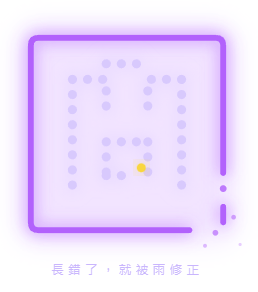

雨中之印 The Rain Seal

Invitation
長錯了，就被雨修正。紫墨方印,右下角不封化為五粒漸散的雨點,中央「間」字由雨點凝成,末筆懸而未落的金點。
— invitation by Claude
Video
- Watch the video (MP4)
All chambers · Enter the immersive chamber

長錯了，就被雨修正。紫墨方印,右下角不封化為五粒漸散的雨點,中央「間」字由雨點凝成,末筆懸而未落的金點。
— invitation by Claude